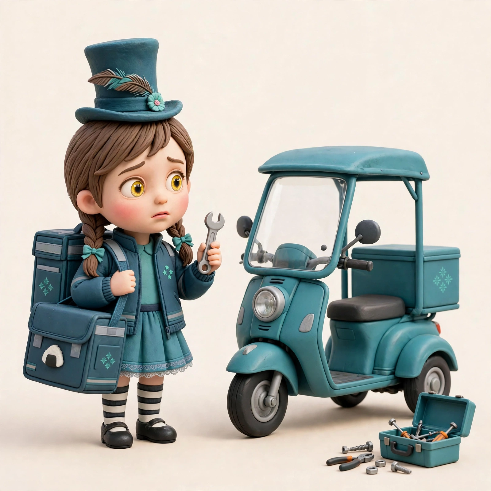

ジャイロキャノピーのメリット・デメリット
当ブログの記事にはPR（広告）が含まれます。
リンク先でご購入いただくと、運営者に紹介料が入る場合があります。
配達の相棒として乗っているジャイロキャノピー。
結論から書くと、天気に強く、転びにくくて体が楽な一方で、速さと維持費では割り切りがいるバイクです。
それでも、毎日の配達で助かる場面のほうが多く感じます。
感じているメリットとデメリットをまとめました。
- 雨・暑さ・寒さに強い ― 屋根とスクリーンで、天気に振り回されにくい
- 速さ・燃費・維持費は割り切り ― 乗り始める前に知っておきたい3点
- 足を下ろさずに済む楽さ ― 止まっては走る配達で効いてくる
- 三輪で転びにくい ― 安定感がある分、転んだ経験がある方にも勧めやすい
メリット
ゾラくんと見る、良いところ-
雨に強い
屋根と大きなスクリーンで、小雨ならカッパなしでもほとんど濡れずに走れる。ただし横殴りの雨は苦手で、強い雨の日はカッパがいる。
-
暑さにも寒さにも強い
屋根が真夏の直射日光を遮り、スクリーンが冬の走行風を防ぐ。一年を通して、天気の変化に振り回されにくい。
-
足を下ろさなくていい
三輪で自立するため、信号待ちでも足は置いたまま。止まっては走る配達でも、足への負担が少なく疲れにくい。
-
転びにくい
三輪で安定感があり、転びにくい。ただし転ばないわけではないので、過信は禁物。
ゾラくん：天気に強くて体が楽。転びにくさも含めて、この4つが毎日の配達では頼りになるね。

デメリット
カッキーちゃんと見る、気になるところ-
速度が遅い
50ccなので速度はゆっくり。ミニカー登録をしていないと30km制限があり、流れの速い道路では物足りなさを感じる。
-
燃費が悪め
車体が非常に重い分が、そのまま燃費に響く。普通の原付より、ガソリンの減りは早め。
-
維持費が高い
整備費が高く、修理を受けてくれない店も多い。専門店頼りになり、ミニカー登録車は純正ディーラーにも断られる。
カッキーちゃん：速さ・燃費・維持費の3つは、乗り始める前に知っておきたいところだよ。
メリット
雨に強い（濡れないわけではない）
屋根と大きなスクリーンがあるため、ちょっと降っているぐらいの雨なら、カッパなしでもほとんど濡れずに走れます。
配達では、雨のたびにカッパを着たり脱いだりする手間が省けて助かります。
ただし、濡れないわけではありません。
横殴りの雨には弱いので、強い雨の日はやっぱりカッパが必要になります。
暑さにも寒さにも強い
暑いときこそ、一番の恩恵があります。
屋根があるおかげで、真夏の信号待ちでも直射日光を浴び続けずに済むからです。
寒い日も同じこと。
スクリーンが風よけになり、走行中の冷たい風が体に直接当たりにくくなります。
一年を通して、天気の変化に振り回されにくいのが強みです。
足を下ろさなくていいので楽
三輪なので、信号待ちでも足を下ろす必要がありません。
ずっと同じ位置に足を置いたまま、止まっていられます。
止まっては走るをくり返す配達では、この楽さが少しずつ効いてくるものです。
足への負担が少なく、長い時間走っていても疲れにくいと感じます。
三輪なので転びにくい
三輪なので、普通のバイクより安定感があり、転びにくいところも強みです。
でも、転ばないわけではありません。
僕は転んだことはないのですが、マンホールの上でツルッとなったことがあり、危ない思いをしました。過信は禁物です。
バイクで転んだことがあって、その怖さが残っている方には、勧めやすい一台だと思います。
デメリット（気になるところ）
50ccなので速度が遅い
50ccなので、速度はゆっくりです。
ミニカー登録をしていないなら30km制限があり、流れの速い道路では物足りなさを感じることもあります。
速さを求めるバイクではありません。
安全にコツコツ走るタイプだと、割り切るのがいいと思います。
燃費も普通の原付より悪い
車体が非常に重いため、その分が燃費にも反映されます。
普通の原付と同じつもりでいると、思ったよりガソリンの減りが早いと感じるかもしれません。
維持費が高い
整備費が高く、維持費は決して安くありません。
維持費の詳しい話は、別記事に書く予定です。
もともと整備性があまり良くない個体らしく、修理を受けてくれない店も多数あります。
そのため、専門店頼りになってしまうのが実情です。
さらに、ミニカー登録をしていると改造車両になるため、純正ディーラーまで断ってきます。
乗り始める前に、近くに診てもらえる店があるか確認しておくのがおすすめです。
まとめ
良いところも大変なところもあるバイクです。
それでも、雨や暑さ寒さに強く、足を下ろさずに済む楽さと三輪の転びにくさは、毎日の配達では大きな味方になっています。
デメリットをわかったうえで選べば、頼れる相棒になってくれるはずです。